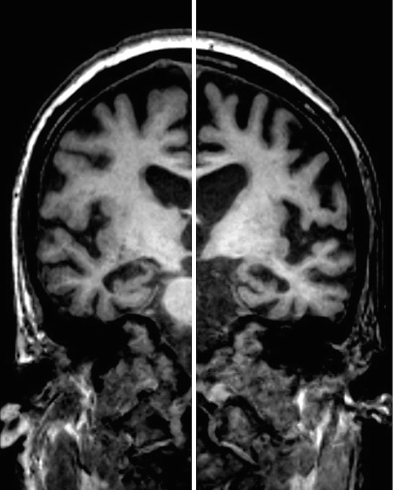

Plataforma premium · residência tier 1–2
Neurologia
A trilha de neurologia para residência: do idoso frágil que faz toda a doença neurológica ao diagnóstico diferencial das demências, e daí ao movimento, à dor de cabeça e à fraqueza. Uma regra atravessa tudo: primeiro a síndrome, depois a etiologia — diagnóstico de exclusão, nunca um palpite.
Caso longitudinal · objetos persistentes · piso visual por página · quiz com explicação de todas as alternativas.

Trilha principal · a espinha da neurologia
Aula 01
Síndrome Geriátrica
Do idoso que cai ao idoso frágil: cognição, humor, mobilidade, os I's da geriatria e a iatrogenia que faz menos ser mais — com Dona Helena como fio.
GLM-5.2no ar · 12 páginas
Aula 02
Síndromes Demenciais
Do “não grite o diagnóstico” ao tabelão das raras: os domínios que caem, os selos que fazem a demência, Alzheimer por dentro e o que imita e some quando você trata.
GLM-5.2no ar · 15 páginas
Aula 03
Doença de Parkinson
A síndrome parkinsoniana antes do diagnóstico etiológico: tremor de repouso assimétrico, a substância negra que se apaga e os sinais pré-motores que chegam antes.
em produção
Epilepsia · cinco partes, do conceito ao status
Parte 1
Conceitos-chave
O que é crise e o que é epilepsia: provocada × não provocada, o que o tempo da doença decide e por que meningite entra nas duas colunas.
minimax-m3Copilotno ar · 7 páginas
Parte 2
Aula principal
A espinha da epilepsia: da fisiopatologia da descarga ao arsenal terapêutico, passando pelo EEG que confirma e pelo que ele não exclui.
GLM-5.2no ar · 20 páginas
Parte 3
Classificação das crises
Focal, generalizada e o que muda entre elas: TCG fase a fase — duro, abalos e a névoa pós-ictal que não é status.
GLM-5.2no ar · 7 páginas
Parte 4
Manejo da crise
O relógio do status: 5 e 30 minutos, benzodiazepínico de primeira linha, e a pergunta que vem depois de estabilizar — não antes.
deepseek-v4no ar · 11 páginas
Parte 5
Crise febril
Simples × complexa na criança: o que assusta a família, o que muda a conduta e o que não precisa de punção.
GLM-5.2no ar · 8 páginas
Fraqueza muscular · a abordagem por topografia
Aula 01
Fraqueza muscular — o guia
Onde a lesão mora: primeiro neurônio, segundo neurônio, placa e músculo — a topografia que decide o diferencial antes de qualquer exame.
Grokno ar · 12 páginas
Aula 02
Esclerose múltipla
Jaqueline, dois surtos: disseminação no tempo e no espaço, as três síndromes que caem em prova e o sinal de Uhthoff, a RM que prova o que a clínica suspeita — e a linha entre surto e sequela, com o PCDT do SUS.
GLM-5.2Copilotno ar · 12 páginas
Aula 03
Síndrome de Guillain-Barré
João e a fraqueza que sobe: a polirradiculoneuropatia desmielinizante aguda, os sinais que a separam do resto — esfíncteres preservados, face dos dois lados — e o elo com a dengue, das duas complicações que o Brasil precisa reconhecer.
deepseek-v4Copilotno ar · 10 páginas
Aula 04
Placa motora — miastenia e LEMS
Marcela e a força que muda com o uso: a fatigabilidade que define a junção neuromuscular, o anti-AChR e o que fazer quando ele é negativo, a timectomia com seus cortes de idade — e a matriz que separa miastenia de LEMS.
minimax-m3Grokno ar · 12 páginas
Aula 05
Esclerose lateral amiotrófica
Jairo, 58 a: cãibras que viraram pé caído, e um exame que mostra atrofia e Babinski no mesmo corpo — os dois neurônios juntos. A fasciculação que é inespecífica na vida e ímã na prova, os ~3 anos com a mente intacta, e o suporte que prolonga onde não há cura.
GLM-5.2Grokno ar · 8 páginas
Aula 06
O que mudou — atualizações por andar
O mapa dos quatro andares revisitado pelo que se atualizou: a miosite que parece dermatomiosite mas mudou de alvo, o surto de esclerose múltipla em gramas e dias, o kappa no liquor, e a placa motora do lado pré-sináptico, onde a força sobe com o uso.
minimax-m3Grokno ar · 7 páginas
Cefaleia · da abordagem às que matam
Aula 01
Cefaleia — abordagem sindrômica
A pergunta que separa primária de secundária, os sinais de alarme que mudam a conduta e o caminho até o exame que não pode faltar.
GLM-5.2no ar · 10 páginas
Aula 02
Cefaleias — o catálogo das primárias
Depois de afastar o perigo, nomear: por que a enxaqueca manda na prova, a aura que assusta como AVE, quem merece profilaxia — e a salva, com O₂ a 10–12 L e a ponte de verapamil.
minimax-m3no ar · 18 páginas
Bônus · temas que caem menos, mas caem
Bônus
Hipogonadismo masculino
Fora da trilha principal, mas cai: eixo, clínica e a reposição que exige mais cuidado do que parece.
a caminho
Bônus
Cuidados paliativos
O que fazer quando curar não é o alvo: controle de sintoma, comunicação e as decisões de fim de vida.
a caminho